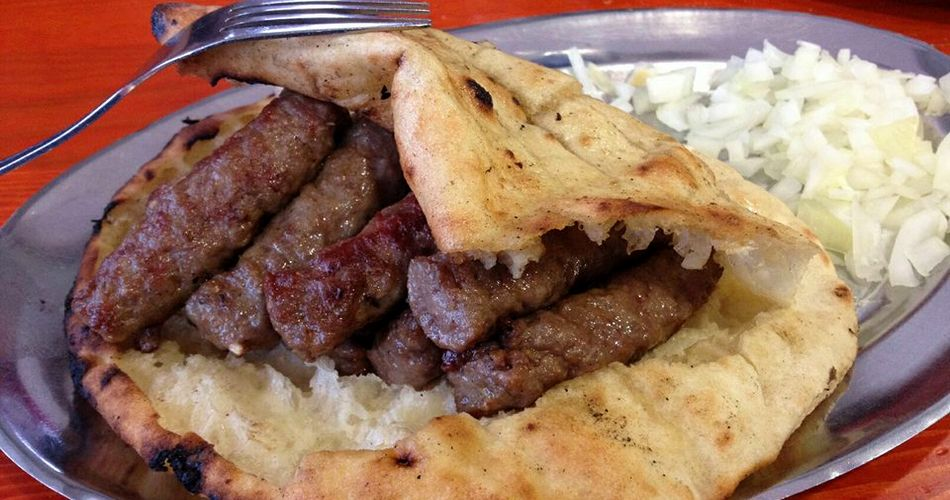

Cevapi

A meat sausage that traditionally comes from eastern Europe.
These small sausages are a staple of eastern European cuisine. They can be eaten alone or served with bread, buns, or chopped in a dish. Cevapi are very versatile with many types of cuisine. They can be bought as veal, pork, or a mix of the two.
Ingredients
- Cevapi of your choice
- Salt & Pepper
- Garlic
- Seasoning
- Olive Oil
- Onions
- Asparagus(optional)
- Hot Sauce(optional)
- Bread/buns of your choice(optional)
- Marinade the cevapi if desired, otherwise they can be put on raw, with salt & pepper as a minimum.
- Preheat a barbecue to around 350 degrees F.
- Place the cevapi lined up on the grill, and rotate them every 2-3 minutes until fully cooked.
- Baste with barbecue sauce, if so desired.
- Add asperagus, covered in olive oil, in a pan to the top the barbecue.
- Place buns on top rack and toast, if so desired
- Add chopped unions to a small pan and sear, add to cevapi in a bowl afterwards.
- Combine ingredients in a dish and serve with any sauces youd like.